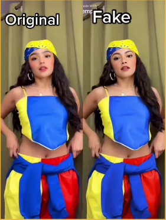

Infodemic: Combating the Spread of Information Disorder
What are the seven types of mis-/ disinformation?
Within the two (2) main categories of the Information Disorder (Misinformation and Disinformation), you will commonly find seven (7) specific types of content according to First Draft. This will help you understand the complexity of the online information environment. This will also show you that there is a wide spectrum that exists between what is true and what is false, between “fake” and “not fake” .
7 Types of Mis-/Disinformation
Fake news is a misnomer. From the word itself, “news” automatically connotes truth so the term fake news does not make sense. But what should it be called? False information—that’s what fake news is. It is misinformation and disinformation, a “problematic content that sit within our information ecosystem” according to Claire Wardle of First Draft, a nonprofit coalition that tackles information disorder online.In this fast-paced age where information floods your social media feed by the second, it is tricky to tell the so-called fake news apart from legit local government news in the Philippines. However, if you can determine the types of misinformation and disinformation at a glance, you might stand a chance.
Wardle outlined 7 types of misinformation (the unintentional dissemination of false information) and disinformation (the intentional dissemination of false information) which varies in level depending on its intent to deceive.
1. Satire or Parody – No intention to cause harm but has intention to fool.
Satire is the use of humor to criticize a subject. Websites like The Adobo Chronicles, So, What’s News?The Professional Heckler and Agila Times, among others, are good examples of satirical websites.

Figure 1. A satirical piece by AdoboChronicles, a Philippine satirical news website, makes the claim that the government has ordered Filipinos aged 21-59 to be quarantined. This is an example of a satirical piece of misinformation that has the potential to give the wrong information for those unaware of the satirical purpose of the article. n (the second highest government post at that).
Although satirical pieces are meant to be humorous, its greater purpose is often constructive social criticism. The problem is when satire is used to strategically spread rumors and conspiracies. When challenged, it can be simply shrugged off “as a joke”, something not meant to be taken seriously. Furthermore, satire can also be dangerous when from its original source, it gets spread online and turned into screenshots or memes, losing its original context in the process .
How to Spot Satire or Parody: Investigate the source, read beyond the headline or ask experts. Satire websites almost always distinguish themselves as satire.
2. False Connection – When headlines, visuals or captions don’t support the content.
Clickbaits are the best examples of the use of ‘false connection’ -- sensational language or imagery used to drive ‘clicks’. This is when you encounter a headline or an image designed to capture your attention, but when you click through it, the link leads you to a content that is of no value to you or content that sells you an item or service. .
Many are guilty of passing judgment after checking the headline without reading the entire content. It’s because some propagandists mastered the art of enticing headlines that elicits emotion from people, and readers are too irresponsible and lazy to read the full content.

Figure 2. A YouTube channel aliciously insinuating in its headline that the Commission on Audit (COA) is “filing charges” against Vice President Leni Robredo for not utilizing P195 million of her office’s budget.
Claim: Its clickbait title read: “VP LENI ROBREDO TINUTUGIS at KAKASUHAN NA ng COA?!| P195 MILLION hindi ITINULONG sa MAHIHIRAP (VP Leni Robredo hounded and will be sued by COA?! P195 million was not used to help the poor)!”
Facts: COA made no such claim in its 2019 audit of the Office of the Vice President (OVP). Neither was reported in the Sept. 6 Inquirer.net report which YouTube channel Showbiz Fanaticz used as a source.
State auditors said this non-utilization was contrary to the efficient management of funds mandated by Presidential Decree 1445 or the Government Auditing Code of the Philippines, also noting that only 38.46% of the total P318-million MAP budget reached beneficiaries last year.
Based on this example, we should be wary of click bait since it often triggers our emotion only to drive traffic on their websites.
How to Spot False Connection: Read beyond the headline (if it’s a video, watch the entirety of it) or check your biases.
3. Misleading Content – Misleading use of information to frame an issue or individual
What counts as ‘misleading’ can be varied and hard to define, but it usually involves omitting pieces of information to tell a story in a certain way (i.e. cropping photos to change its message, choosing statistics selectively). This is also called ‘framing’

Figure 3. It shows a screenshot that claims that 79.4% of the current COVID-19 deaths in the UK are “double vaccinated” or have received two doses of the COVID-vaccine
Claim: 9.4% of the current COVID-19 deaths in the UK are “double vaccinated” or have received two doses of the COVID-vaccine.
Facts: Based on the Fact Check. Org, The article did not take into consideration the age of the patients who died; age is a significant factor in COVID-19 deaths. Although it is true that 3,284 out of 4,135 COVID-19 deaths were among fully-vaccinated patients, 3,081 of them are aged 60 and older.
This is an example of framing where choosing statistics were selective.
How to Spot Misleading Content: Look for similar stories or read beyond the headline.
4. False Context – When genuine content is shared with false contextual information.
False context, When genuine information is shared out of its original context such as when old news stories are re-shared in present time, it can be very dangerous.
Sharing information in its proper context is very important because the context (i.e. the time, place, situation) within which an event or news story existed helps explain the even
Sometimes, it is only a plain case of misinformation where a person mistakenly re-shares an old story. Other times, the purpose is more deliberate: to mislead the people by sharing information in a different context.
We have seen plenty of old local government news resurfacing on social media time and again.

Figure 04. This post is about DSWD packing 50,000 relief goods under the Duterte administration.
While the story about the new system to speed up production of food is true, it did not happen during Duterte’s reign. Based on the caption, the post was meant to give the current administration good press. While the intention is up for debate, it obviously backfired when the date of the news was discovered.
How to Spot False Context: Check the date, check your biases or ask experts.
5. Imposter Content – When genuine sources are impersonated.
Imposter content is false or misleading content that claims to be from established brands, organizations, or personalities.
Your favorite legit local news outlets in the Philippines are a common target of this deception. In this type of misinformation and disinformation, the URL of credible news sites are altered to mimic.
When we get information coming from trusted brands or people, we are not as doubtful. But the problem is, it is very easy to make fake accounts and pretend to be someone else online.

Figure 5. This is a news card from ABS-CBN’s social media pages that was edited. It is an example of imposter content where the credibility of a news organization like ABS-CBN was used to spread misinformation.
How to Spot Imposter Content: Inspect the URL, investigate the source or check the author. You can either visit their official website to confirm if they posted the news or announcement.
6. Manipulated Content – When genuine information or imagery is manipulated to deceive.
Manipulated content is genuine content that is altered or edited to change the message. It is not completely made-up or fabricated. Many people fall for this kind of manipulation because most of us only glance on images or captions while scrolling down our phones. As long as it fits a story and is good enough to ‘look real’, people may share it.

Figure 6. shows An edited screenshot of an advisory with the logo of the Civil Service Commission indicating that those who were scheduled to take the civil service exam (CSE) on March 15, 2020 are deemed “automatically passed” due to the COVID-19 crisis. However, The Civil Service made no such announcement
How to Spot Manipulated Content: Investigate the source.
7. Fabricated Content – New content is 100% false, designed to deceive and do harm.
Fabricated content is anything that is 100% false. This is the only type of content that we can really consider as purely ‘fake’. Staged videos, made-up quotes, and fake websites fall under this category.
Some netizens are gullible to believe fabricated content because of their biases. This type of internet users would instantly believe information they see no matter how hilarious it is because their perception of truth is clouded. If the news is in favor of their biases, regardless if it is 100% made up, they’d buy it and even help spread it.

Figure 7 shows Various edited quote cards or graphics showing famous personalities and fictional characters praising President Duterte have been circulating online. These quotes are completely made up with no source or other news report verifying these personalities’ statements.
Figure 8. It shows a screenshot from the inFamous tik tok dance challenge of Andrea Brillantes where in internet users use ‘Deepfakes’ or ‘synthetic media’, that uses fabricated media produced using Artificial Intelligence (AI), which usually combine different elements of video and audio to create ‘new’ content that never actually happened
How to Spot Fabricated Content: Look for similar stories, read beyond the headline or check your biases.
No matter what the intent is, sharing false information has a big impact on the parties involved and the public. Before you share that local government news, remember the 7 types of misinformation and disinformation and determine if what you just read is false information.
https://lifestylesharer.wordpress.com/2019/01/10/7-types-of-mis-and-disinformation-and-how-to-spot-them/
#IWASFAKE Basic Remote Learning Course on “Dealing with Disinformation Amidst the Infodemic”https://www.ootbmedialiteracy.org/iwasfake//